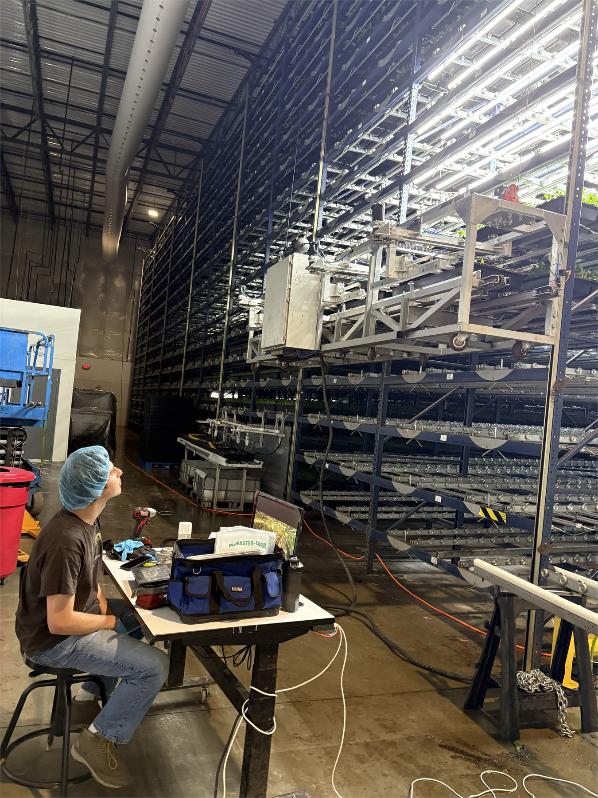
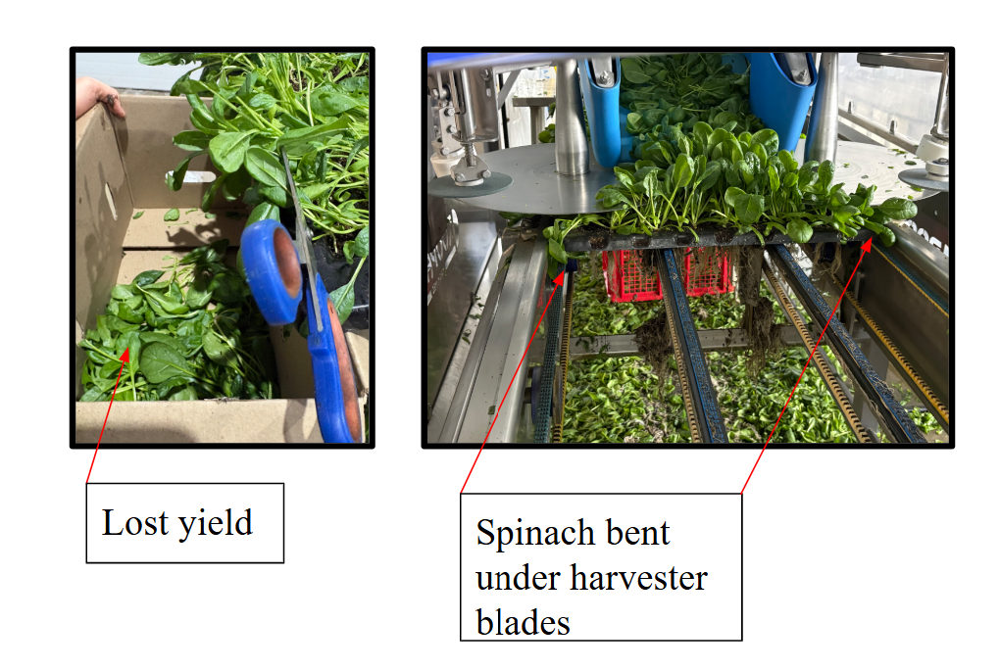
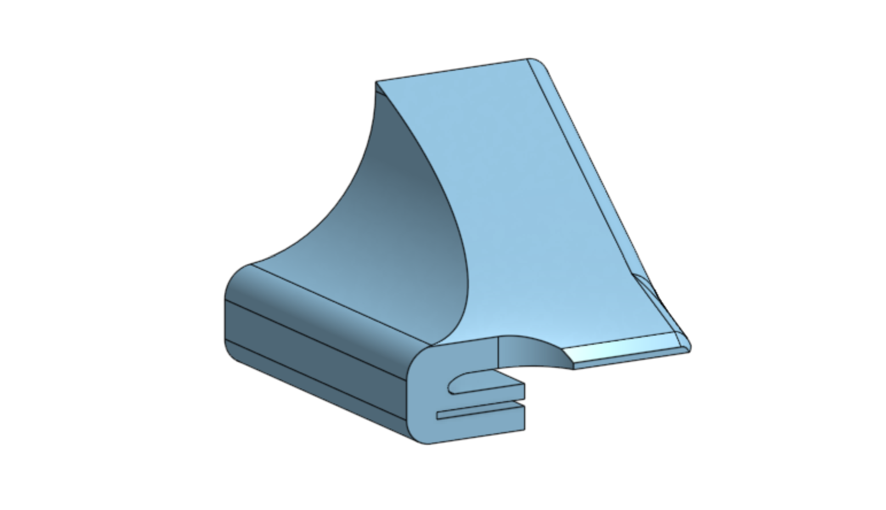
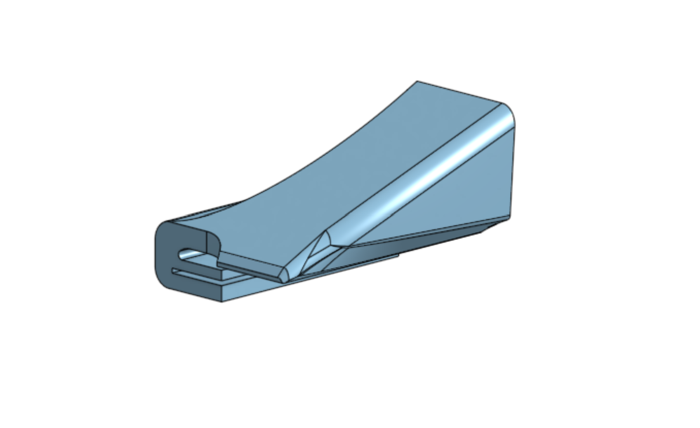
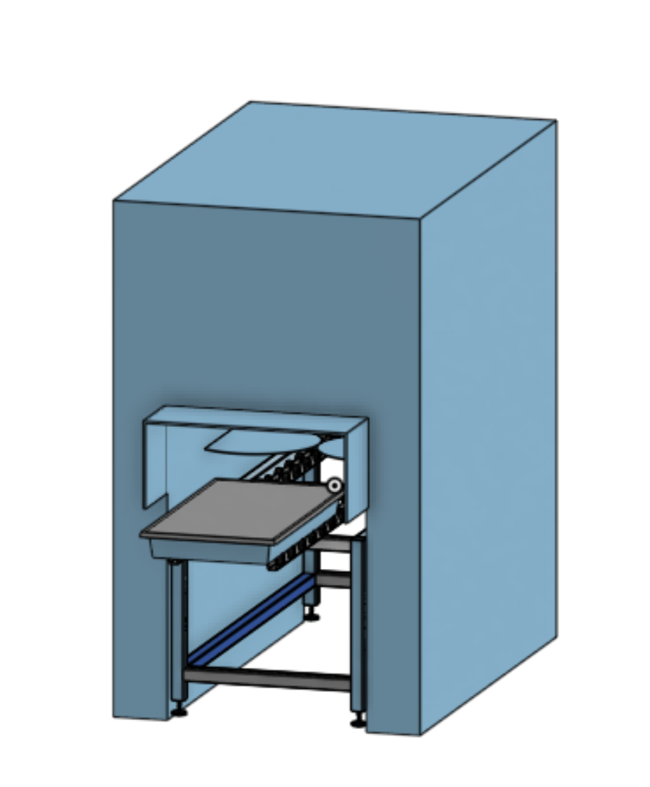
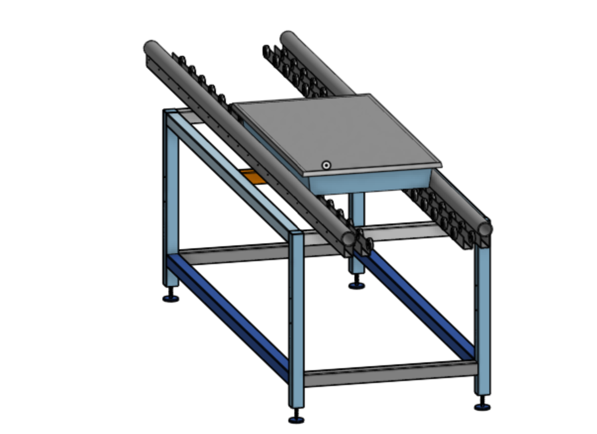
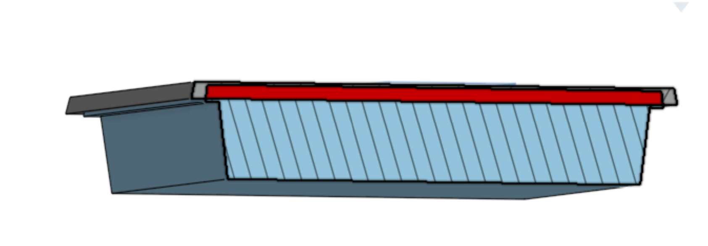
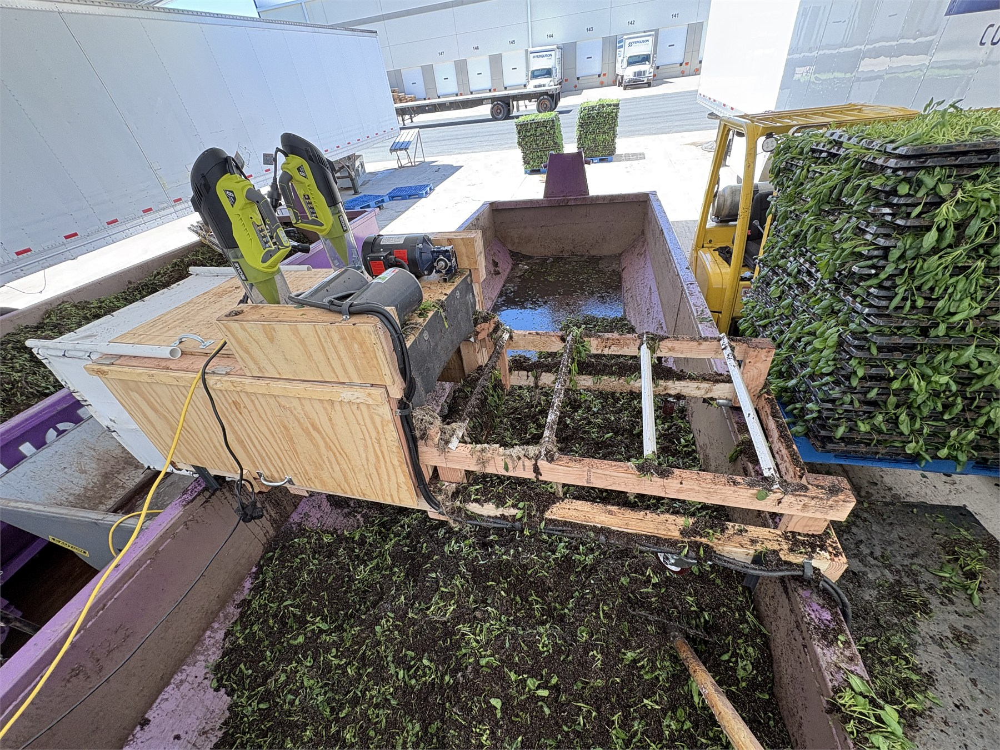
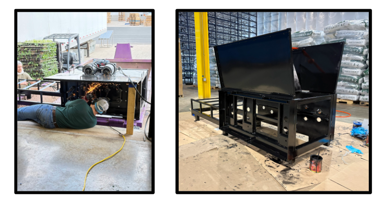

Manufacturing and automation
Beanstalk Farms
My work at Beanstalk Farms focused on reducing harvest waste, improving material flow, and automating repetitive packaging tasks through process analysis and mechanical design.

Spinach loss during harvesting
Spinach was being lost outside the collection path or bent beneath the harvester blades. I measured three samples to estimate the daily and weekly impact of the lost yield.

| Waste Analysis & Cost Impact Report | |||||||
|---|---|---|---|---|---|---|---|
| Sample # | Weight (oz, 5 PCs) |
Avg Weight Per PC (oz) |
Per Day Waste (lbs) |
Clamshells Per Day |
Money Wasted / Day |
Money Wasted / Week |
Fudge Factor (~25%) Weekly Expense |
| 1 | 30.05 | 6.01 | 247.91 | 1,133.3 | $1,756.62 | $8,783.12 | $6,587.34 |
| 2 | 26.55 | 5.31 | 219.04 | 1,001.3 | $1,552.03 | $7,760.13 | $5,820.10 |
| 3 | 26.60 | 5.32 | 219.45 | 1,003.2 | $1,554.95 | $7,774.74 | $5,831.06 |
| TOTAL / AVG | 83.20 | 5.55 | 228.80 | 1,045.9 | $1,621.20 | $8,106.00 | $6,079.50 |
| KEY INSIGHTS | |||||||
| Daily Money Wasted (Avg) | $1,621.20 | ||||||
| Weekly Money Wasted (Avg) | $8,106.00 | ||||||
Spinach guide
I designed guides to direct the crop into the collection path and reduce the amount of spinach bending beneath the harvester blades.


Harvester conveyor
The existing conveyor under the harvester allowed only the lid to pass through, so the lid and basin had to be separated manually. I designed a conveyor that lets both travel together, reducing handling and increasing throughput.



Terra machine
Terra cleans lids for reuse, replacing a tedious manual cleaning process.


Terra operating demonstration. If playback is unavailable, open the original video.